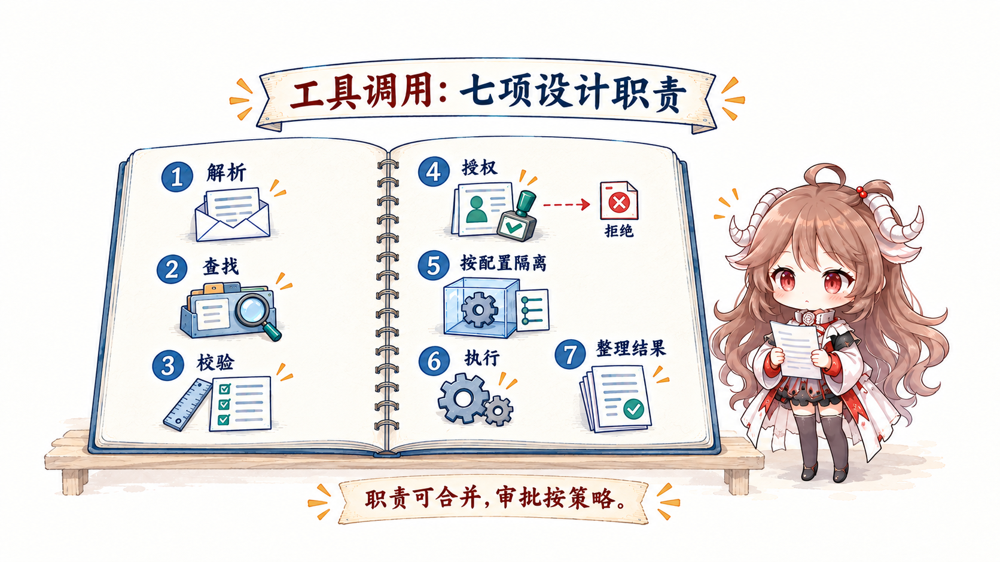
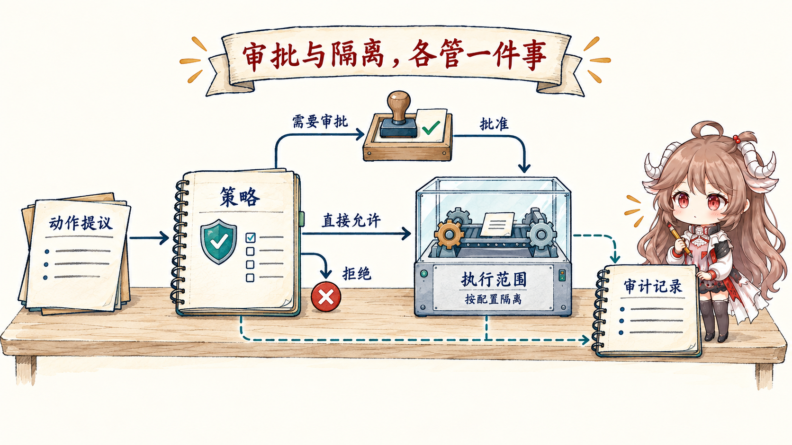

最小 agent demo 往往只有十几行：发消息给模型，若返回 tool call 就执行，再把结果送回去。真实运行时很快会遇到另外几十个问题：参数不合法怎么办？读和写能否并发？命令在哪里跑？谁批准网络访问？输出太大怎样保存？进程中断后从哪恢复？用户如何看到进度？一次动作如何审计？这些都不是模型权重里的能力。
阅读契约
- 这篇回答：Runtime harness 包含哪些责任，工具调用怎样穿过安全与状态边界。
- 这篇不回答：把所有 agent 工程都塞进 harness，也不混淆 loop 控制流和运行时承载面。
- 读完检查：你能为一个 tool call 画出从提案到 evidence 的完整执行路径，并指出每个失败的归属。
术语边界
OpenAI 的 Harness engineering 把 Codex harness 写成核心 agent loop 及其工具和指令环境；Anthropic 的公开材料有时强调 instructions + guardrails，有时把 session、harness、sandbox 拆开。本系列用较窄定义：harness 是模型之外、单次 run 之内的执行环境与控制面；agent loop 是驱动它反复前进的控制流。
一、Harness 的第一职责是拥有边界
模型擅长在不完整信息下提出计划；运行时必须把不确定性关在确定边界里。什么工具对当前角色可见、参数是否符合 schema、哪些目录可写、网络连到哪里、结果如何序列化，都应由代码和策略拥有，而不是由模型临场决定。
| 控制面 | 拥有的事实 | 不能外包给模型的原因 |
|---|---|---|
| Request assembler | 模型、instructions、tools、context view、预算 | 请求必须可重现、可观测 |
| Tool registry | 名称、schema、能力、版本、结果类型 | 不能让模型发明真实接口 |
| Policy / permission | allow、deny、ask、作用域 | 安全边界需要确定性 |
| Sandbox / executor | 文件、进程、网络、资源限制 | 提示词不能隔离副作用 |
| State / transcript | run 状态、事件、结果引用、checkpoint | 恢复与审计需要持久事实 |
| Observer / evaluator | 进度、指标、结果证据 | 自我报告不能成为唯一真值 |
二、一次 tool call 要穿过七个关口
Tool call 是模型输出的一段结构化提案。一个稳健 harness 不会把它直接映射成函数调用，而会把“解释、授权、执行、观察”拆开。

- Parse：确认 tool call 结构完整，关联到当前请求。
- Resolve：在当前可见 registry 中找到精确工具版本。
- Validate：按 schema 检查类型、范围、互斥和必填字段。
- Authorize：结合角色、资源、动作和环境决定 allow / deny / ask。
- Isolate：建立文件、进程、网络和凭据边界。
- Execute：管理超时、取消、并发、重试与幂等键。
- Normalize：把 stdout、结构结果、错误与 artifact 变成稳定 observation。
{
"call_id": "call_42",
"tool": "run_tests@3",
"arguments": { "target": "./payment", "mode": "read-write" },
"policy": { "decision": "allow", "rule": "repo-test" },
"sandbox": { "fs": "workspace", "network": "off", "timeout_s": 120 },
"result": { "status": "failed", "exit_code": 1, "artifact_ref": "log://9f2" }
}三、工具设计决定模型可学到的动作空间
工具不是越多越好。两个语义重叠的写工具、一个万能 shell 和模糊的自由文本参数，会让动作空间膨胀。模型既要猜工具，又要猜参数，还要从非结构输出里判断成功。Harness engineering 的高杠杆工作之一，是把复杂世界压成少量、正交、可组合的工具。
3.1 一个好工具要同时服务模型与运行时
| 维度 | 给模型的界面 | 给运行时的界面 |
|---|---|---|
| 语义 | 何时调用、何时不调用 | 能力 id 与版本 |
| 输入 | 少量清晰字段 | 严格 schema 与规范化 |
| 输出 | 足够决定下一步 | typed result、artifact 与错误分类 |
| 副作用 | 明确会改变什么 | 权限、幂等、补偿和审计 |
| 成本 | 何时值得调用 | 超时、速率、token 与资源预算 |
大量输出不要整段塞回 context。Harness 可以把完整日志存成 artifact，只回填摘要、关键错误和可继续读取的引用。这同时改善 context budget 与恢复能力。
四、权限与沙箱是两道不同的门
Permission 回答“这个主体是否被允许做这个动作”；sandbox 回答“即便允许，动作实际能触达什么”。批准运行测试不等于允许访问整个主目录；允许读取仓库不等于允许把内容发到任意网络端点。二者必须组合。

- Capability scope：先不把无关工具暴露给模型。
- Policy decision：按动作、资源、主体和环境匹配规则。
- Human approval：只在高风险或含糊边界暂停，并展示可理解的 diff。
- Sandbox：用文件系统、网络、进程和凭据隔离限制 blast radius。
- Audit：记录谁提出、哪条规则允许、实际发生了什么。
五、Session、state 与 transcript 不能混成聊天记录
Anthropic 的 Managed agents 把 session 看作围绕模型、harness 和 sandbox 的有状态环境。工程上至少要区分：UI 对话、模型可见 messages、append-only 事件、外部 artifact、checkpoint 与环境快照。它们生命周期不同，也服务不同恢复路径。
中断恢复时，最危险的做法是仅把旧聊天重新发给模型。运行时还需要知道哪些工具调用真正执行过、哪些在途、工作区是否改变、审批是否仍有效、外部对象是否已经创建。副作用状态必须从确定性记录恢复，不能让模型根据文本猜。
六、可观测性必须跨越模型和工具
只有最终文本和总 token 数，无法诊断 harness。需要把一次 run 串成 trace：request assembly、model events、tool proposal、policy decision、sandbox execution、observation、checkpoint 和 exit reason。敏感正文可以脱敏，但控制事件不能消失。
- 稳定的 run / turn / call id 关联所有事件；
- 记录 tool latency、排队、重试、取消和 artifact 大小；
- 区分模型错误、工具错误、策略拒绝、环境错误和用户中止；
- 保留退出原因与未完成工作，供 outer loop 判断下一步。
七、复盘：Harness 评审清单
| 评审问题 | 如果答不出来 | 风险 |
|---|---|---|
| 当前模型究竟能看到哪些能力？ | 没有版本化 registry | 能力漂移和错误选择 |
| Tool call 在哪里被确定性校验？ | 依赖模型自检 | 非法参数进入副作用层 |
| 授权与隔离各由谁负责？ | 只有 prompt 警告 | blast radius 无边界 |
| 大结果和秘密怎样处理？ | 原样回填 context | 泄漏与窗口污染 |
| 进程中断后以什么事实恢复？ | 只重放聊天 | 重复副作用与错误状态 |
| 每个退出是否有可机读原因？ | 只有 final 文本 | Outer loop 无法安全接管 |
Harness 把“模型能想到”变成“系统能安全做到”。下一篇进入它内部不断前进的控制流：Agent loop 怎样让一次运行正确收敛。